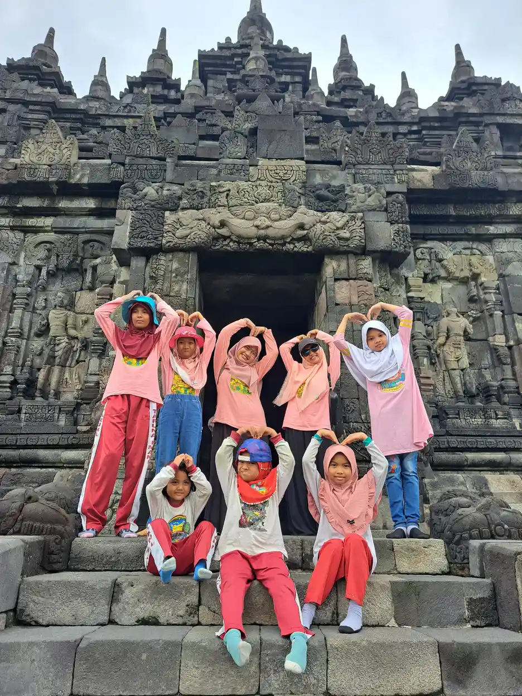

Permainan motorik kasar adalah kegiatan bermain yang menggerakkan otot besar tubuh, seperti berjalan, berlari, melompat, memanjat, menendang, dan menjaga keseimbangan. Permainan jenis ini membangun kekuatan, koordinasi, dan rasa percaya diri anak terhadap tubuhnya sendiri, sekaligus menjadi cara paling alami bagi anak untuk memenuhi kebutuhan geraknya setiap hari.
Bagi anak berkebutuhan khusus, permainan motorik kasar sering kali menjadi pintu masuk paling ramah. Kegiatannya tidak menuntut bahasa yang rumit, mudah disesuaikan tingkat kesulitannya, dan bisa dilakukan bersama saudara atau teman tanpa perlu peralatan mahal.
Untuk memahami konsep dasarnya lebih dahulu, baca artikel motorik kasar adalah. Bila Anda ingin membandingkannya dengan keterampilan tangan, lihat perbedaan motorik kasar dan halus.
Apa Itu Permainan Motorik Kasar?
Motorik kasar merujuk pada kemampuan menggerakkan kelompok otot besar untuk berpindah tempat, menjaga postur, dan mengendalikan tubuh dalam ruang. Permainan motorik kasar berarti kegiatan bermain yang secara sengaja memakai kemampuan tersebut, mulai dari mengejar gelembung sabun sampai bermain lompat tali.
Yang membedakannya dari sekadar olahraga terstruktur adalah unsur bermainnya. Anak bergerak karena kegiatannya menarik, bukan karena diperintah menyelesaikan repetisi tertentu. Unsur ini penting karena keterlibatan yang muncul dari rasa senang jauh lebih mudah dipertahankan dalam jangka panjang.
Kemampuan motorik kasar berkembang bertahap dan dapat dipantau melalui tahapan perkembangan. Panduan gerak dan koordinasi dari American Academy of Pediatrics menjelaskan bahwa pada masa balita anak biasanya semakin lancar berlari, menendang bola, menaiki tangga sambil berpegangan, dan mencoba berdiri dengan satu kaki. Pada usia prasekolah, kemampuan ini berkembang menuju lompatan dan keseimbangan yang lebih matang.
Inti penting: Tahapan perkembangan adalah gambaran umum, bukan garis lulus. Variasi antaranak itu wajar. Yang perlu ditindaklanjuti adalah keterampilan yang hilang setelah dikuasai atau ketertinggalan yang menetap.

Manfaat yang Didapat Anak
Manfaat paling jelas ada pada tubuh: otot menjadi lebih kuat, tulang lebih padat, jantung dan paru bekerja lebih efisien, serta koordinasi dan keseimbangan meningkat. Pedoman aktivitas fisik dari Departemen Kesehatan dan Layanan Kemanusiaan Amerika Serikat membagi aktivitas anak usia sekolah menjadi aerobik, penguat otot, dan penguat tulang, lalu menganjurkan agar ketiganya hadir dalam sepekan.
Manfaat kedua berkaitan dengan pengaturan diri. Anak yang mendapat kesempatan bergerak cukup umumnya lebih siap untuk duduk dan menyimak setelahnya. Bagi anak yang mudah gelisah, jeda gerak singkat sebelum kegiatan yang menuntut konsentrasi sering lebih efektif daripada peringatan berulang.
Manfaat ketiga bersifat sosial. Permainan motorik kasar biasanya melibatkan giliran, aturan sederhana, dan kerja sama. Di sinilah anak berlatih menunggu, menerima kalah, dan menyesuaikan diri dengan kecepatan teman. Bagi anak berkebutuhan khusus, konteks bermain sering terasa lebih ringan daripada latihan sosial yang formal.
Manfaat keempat berkaitan dengan kemandirian. Anak yang percaya pada tubuhnya lebih berani mencoba naik tangga sekolah, membawa tasnya sendiri, atau ikut kegiatan luar ruang. Kepercayaan itu tumbuh dari pengalaman berhasil yang berulang, bukan dari dorongan verbal semata.
Berapa Lama Anak Perlu Bergerak Setiap Hari?
Anjuran durasi berbeda menurut usia. Tabel berikut merangkum panduan dari tiga lembaga kesehatan yang dapat Anda periksa langsung sumbernya.
| Kelompok Usia | Anjuran | Sumber |
|---|---|---|
| Bayi di bawah 1 tahun | Aktif beberapa kali sehari lewat bermain di lantai. Bayi yang belum mobile dianjurkan setidaknya 30 menit posisi tengkurap, dibagi sepanjang hari saat terjaga. | WHO |
| 1 sampai 2 tahun | Setidaknya 180 menit sehari dengan beragam intensitas, disebar sepanjang hari. | WHO dan NHS |
| 3 sampai 4 tahun | Setidaknya 180 menit sehari, termasuk minimal 60 menit aktivitas sedang hingga berat. | NHS |
| 5 sampai 18 tahun | Rata-rata setidaknya 60 menit aktivitas sedang atau berat per hari sepanjang pekan. | NHS |
| 6 sampai 17 tahun | 60 menit atau lebih aktivitas sedang hingga berat setiap hari, termasuk aktivitas berat, penguat otot, dan penguat tulang masing-masing minimal tiga hari sepekan. | HHS |
| 5 sampai 18 tahun dengan disabilitas | Menargetkan 20 menit aktivitas fisik sehari, boleh dipecah menjadi bagian kecil, ditambah aktivitas kekuatan dan keseimbangan tiga kali sepekan. | NHS |
WHO juga mengingatkan agar anak kecil tidak dibiarkan terkekang dalam waktu lama, misalnya duduk di kereta dorong atau kursi pengaman lebih dari satu jam berturut-turut. Pesan ini penting bagi keluarga yang sering bepergian jauh bersama anak.
Ide Permainan Menurut Tahapan Usia
Ide berikut disusun berdasarkan tahapan yang umum, bukan berdasarkan usia kalender yang kaku. Sesuaikan dengan kemampuan anak Anda saat ini, lalu naikkan tingkat kesulitannya secara bertahap.
Bayi yang belum berjalan. Waktu tengkurap dengan mainan menarik di depan wajah, meraih benda dari posisi miring, berguling bolak-balik di atas matras, mendorong badan dari posisi tengkurap, serta permainan cilukba yang mendorong anak mengangkat kepala dan bahu.
Anak yang baru berjalan. Berjalan mengikuti garis di lantai, mendorong kursi kecil atau keranjang, menendang bola besar, memasukkan bola ke ember, naik turun anak tangga rendah dengan pegangan, serta berjalan di atas bantal untuk melatih keseimbangan.
Usia prasekolah. Lomba estafet sederhana, melompat dari satu lingkaran ke lingkaran lain, meniti balok rendah, melempar dan menangkap bola ringan, bermain patung bergerak yang berhenti saat musik berhenti, serta merangkak melewati terowongan dari kardus.
Usia sekolah. Lompat tali, engklek, bersepeda, berenang, permainan bola beregu, memanjat di taman bermain, panjat tali, serta permainan tradisional seperti gobak sodor yang melatih kelincahan dan kerja sama sekaligus.
Contoh tambahan yang lebih rinci tersedia pada artikel contoh motorik kasar dan motorik kasar contohnya.
Permainan Motorik Kasar di Rumah dan Halaman
Rumah dengan ruang terbatas tetap bisa menjadi tempat bermain aktif. Lakban warna di lantai dapat diubah menjadi jalur meniti, lompat kotak, atau garis start. Bantal dan guling bisa disusun menjadi rintangan rendah. Botol air minum bekas dapat berfungsi sebagai pin boling yang dijatuhkan dengan bola kaus kaki.
Kegiatan rumah tangga juga dapat dihitung sebagai gerak bermakna. Membawa keranjang cucian, menyapu teras, menyiram tanaman, atau membantu memindahkan kursi memberi anak masukan tekanan pada otot dan sendi yang bagi banyak anak terasa menenangkan sekaligus melatih kekuatan.
American Academy of Pediatrics menyarankan beberapa hal praktis: tekankan aspek menyenangkan, pilih kegiatan yang sesuai tahap perkembangan, siapkan lingkungan yang aman, sediakan mainan aktif seperti bola dan tali lompat, serta jadilah contoh dengan ikut bergerak. Anak yang terbiasa melihat orang tuanya menikmati aktivitas fisik lebih mungkin melakukannya sendiri.
Menyesuaikan Permainan untuk Anak Berkebutuhan Khusus
Prinsip penyesuaian yang paling berguna adalah mengubah satu variabel dalam satu waktu. Anda dapat menurunkan jarak, memperbesar sasaran, memperlambat tempo, memperpendek durasi, mengurangi jumlah pemain, atau mengganti aturan menjadi lebih sederhana. Dengan cara ini, permainan tetap sama sehingga anak tidak merasa dipisahkan dari teman-temannya.
Untuk anak dengan hambatan penglihatan, gunakan bola berbunyi, tali pemandu, dan instruksi arah yang konsisten. Untuk anak dengan hambatan pendengaran, sepakati isyarat tangan sebagai tanda mulai dan berhenti. Untuk anak dengan hambatan motorik, sediakan versi permainan yang bisa dilakukan sambil duduk, dan pastikan permukaan bermain tidak menyulitkan alat bantu mobilitas.
Untuk anak yang mudah kewalahan oleh suara dan keramaian, pilih waktu bermain di luar jam ramai, mulai dengan kelompok kecil, dan sediakan tempat menepi yang jelas. NHS secara khusus menyebutkan bahwa anak usia 5 sampai 18 tahun yang hidup dengan disabilitas dapat mulai dari target 20 menit sehari yang dipecah menjadi bagian kecil, ditambah aktivitas kekuatan dan keseimbangan yang menantang namun tetap terkelola tiga kali sepekan. Target kecil yang konsisten lebih baik daripada target besar yang gagal dijalankan.
Bila anak menjalani layanan terapi, mintalah terapis menerjemahkan tujuan terapinya menjadi permainan yang bisa dilakukan di rumah. Pendekatan ini dibahas lebih lanjut pada artikel terapi fisik untuk ABK dan terapi bermain. Untuk pilihan lokasi bermain yang ramah, lihat playground ramah ABK di Jogja.
Aturan Keamanan yang Tidak Boleh Dilewati
Pengawasan orang dewasa adalah faktor keamanan paling menentukan. American Academy of Pediatrics menyebutkan bahwa kurangnya pengawasan dikaitkan dengan hampir separuh cedera di taman bermain. Mendampingi bukan berarti melarang anak mencoba, melainkan berada cukup dekat untuk mencegah risiko yang benar-benar berbahaya.
Untuk perosotan, ajarkan anak meluncur dengan kaki lebih dulu untuk mencegah cedera kepala, dan pastikan area di depan perosotan bebas dari batu, ranting, mainan, atau anak lain. AAP juga mengingatkan agar orang dewasa tidak meluncur sambil memangku anak, karena penelitian menunjukkan kaki anak sering tersangkut dan cedera dalam posisi tersebut.
Perhatikan pula suhu permukaan. Perosotan logam maupun plastik dapat menjadi sangat panas terkena matahari dan membakar tangan serta kaki anak. Pada hari yang terik, pilih taman bermain yang teduh atau majukan jadwal bermain ke pagi hari. Periksa juga pakaian anak dari tali, kalung, atau aksesori yang berisiko tersangkut.
Kapan Perlu Berkonsultasi ke Profesional
Variasi kecepatan perkembangan itu wajar, tetapi ada tanda yang layak dibicarakan dengan tenaga kesehatan. Yang paling penting adalah kehilangan keterampilan yang sebelumnya sudah dikuasai. Anak yang tadinya bisa berjalan lalu berhenti berjalan perlu diperiksa tanpa menunggu.
Tanda lain yang perlu diperhatikan adalah ketertinggalan yang menetap pada tahapan gerak yang umum untuk usianya, pola gerak yang jelas tidak simetris antara sisi kiri dan kanan, tubuh yang terus terasa sangat lemas atau sangat kaku, serta anak yang mudah jatuh jauh lebih sering daripada teman sebayanya.
Mulailah dari dokter anak atau tenaga kesehatan yang biasa menangani anak Anda. Dari sana dapat ditentukan apakah diperlukan pemeriksaan lanjutan atau rujukan ke fisioterapi maupun terapi okupasi. Membawa catatan berisi contoh konkret, misalnya video singkat cara anak berjalan atau naik tangga, akan sangat membantu proses penilaian. Lihat juga artikel intervensi dini untuk memahami mengapa langkah awal penting.
Kesalahan Umum Saat Mendampingi
Kesalahan pertama adalah mengubah bermain menjadi ujian. Ketika orang dewasa terlalu sering mengoreksi dan menghitung keberhasilan, anak belajar bahwa bergerak berarti dinilai. Akibatnya, anak justru menghindari kegiatan yang seharusnya menyenangkan.
Kesalahan kedua adalah membandingkan anak dengan saudara atau teman sebayanya. Perbandingan jarang menghasilkan motivasi dan lebih sering menghasilkan rasa malu. Ukuran yang lebih adil adalah membandingkan anak dengan dirinya sendiri beberapa pekan lalu.
Kesalahan ketiga adalah melompati tahapan. Meminta anak berdiri di satu kaki padahal ia belum stabil berjalan di garis lurus hanya akan memperbesar kegagalan. Naikkan kesulitan setelah anak terlihat berhasil beberapa kali dengan nyaman.
Kesalahan keempat adalah menyerah setelah beberapa kali penolakan. Sebagian anak butuh banyak paparan sebelum merasa aman mencoba. Menawarkan kembali dalam bentuk yang sedikit berbeda, di waktu yang berbeda, sering kali lebih berhasil daripada memaksa pada percobaan pertama.
FAQ tentang Permainan Motorik Kasar
Apa itu permainan motorik kasar?
Permainan motorik kasar adalah kegiatan bermain yang menggunakan otot besar tubuh seperti kaki, tungkai, lengan, dan batang tubuh. Contohnya berjalan, berlari, melompat, memanjat, menendang bola, dan menjaga keseimbangan.
Berapa lama anak perlu bergerak setiap hari?
WHO menganjurkan anak usia 1 sampai 2 tahun aktif setidaknya 180 menit sehari dengan intensitas apa pun. NHS menyebut anak usia 3 sampai 4 tahun juga 180 menit sehari, termasuk minimal 60 menit aktivitas sedang hingga berat. Untuk usia sekolah, HHS menganjurkan 60 menit atau lebih aktivitas sedang hingga berat setiap hari.
Bagaimana dengan bayi yang belum bisa bergerak sendiri?
WHO menganjurkan bayi aktif beberapa kali sehari melalui bermain di lantai. Untuk bayi yang belum mobile, dianjurkan setidaknya 30 menit posisi tengkurap yang dibagi sepanjang hari saat bayi terjaga.
Apakah anak berkebutuhan khusus boleh ikut permainan motorik kasar?
Boleh, dengan penyesuaian. NHS menyarankan anak usia 5 sampai 18 tahun yang hidup dengan disabilitas menargetkan 20 menit aktivitas fisik sehari, dipecah menjadi bagian kecil bila perlu, ditambah aktivitas kekuatan dan keseimbangan yang menantang namun terkelola tiga kali seminggu.
Apa saja aturan keamanan yang penting?
Pilih permainan dan peralatan yang sesuai usia serta tahap perkembangan anak, pastikan permukaan bermain aman, dan dampingi secara aktif. AAP mengingatkan agar anak meluncur di perosotan dengan posisi kaki lebih dulu dan tidak meluncur sambil dipangku orang dewasa.
Anak saya tidak suka olahraga, apa yang bisa dilakukan?
AAP menyarankan menekankan aspek menyenangkan, memilih kegiatan yang sesuai tahap perkembangan, menyediakan mainan aktif seperti bola dan tali lompat, serta menjadi contoh dengan ikut bergerak bersama anak.
Kapan perlu konsultasi ke profesional?
Konsultasikan bila anak kehilangan keterampilan yang sudah dikuasai, belum mencapai tahapan gerak yang umum untuk usianya, atau menunjukkan pola gerak yang tidak simetris. Mulailah dari dokter anak untuk menentukan pemeriksaan lanjutan.
Kesimpulan
Permainan motorik kasar adalah cara paling alami bagi anak untuk membangun kekuatan, koordinasi, dan kepercayaan pada tubuhnya. Kuncinya bukan peralatan mahal, melainkan kesempatan bergerak yang cukup setiap hari, tingkat kesulitan yang naik secara bertahap, dan pendampingan yang aman.
Gunakan anjuran durasi dari WHO, NHS, dan HHS sebagai rambu, bukan sebagai target yang menekan. Bagi anak berkebutuhan khusus, mulailah dari target kecil yang konsisten dan sesuaikan satu variabel dalam satu waktu agar anak tetap bisa bermain bersama teman-temannya.
Jika Anda ingin melihat bagaimana kegiatan gerak dipadukan dengan pendidikan bagi anak berkebutuhan khusus, pelajari program YUKA atau ikut mendukungnya melalui donasi.
Sumber Resmi dan Referensi
Artikel ini menggunakan sumber publik yang mendukung informasi kesehatan dan pendidikan:
- WHO: Guidelines on Physical Activity, Sedentary Behaviour and Sleep for Children Under 5
- NHS: Physical Activity Guidelines for Children Under 5 Years
- NHS: Physical Activity Guidelines for Children and Young People
- U.S. Department of Health and Human Services: Physical Activity Guidelines for Americans
- American Academy of Pediatrics: Movement and Coordination
- American Academy of Pediatrics: Playground Safety
- American Academy of Pediatrics: 11 Ways to Encourage Your Child to Be Physically Active
- MedlinePlus: Child Development
Disclaimer Medis dan Pendidikan: Artikel ini bersifat edukasi umum dan bukan pengganti diagnosis, terapi, atau konsultasi profesional. Untuk keputusan kesehatan anak, konsultasikan dengan dokter atau tenaga profesional yang berwenang.